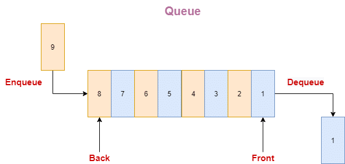

What is a Queue?
A queue is a linear data structure that follows the First-In-First-Out (FIFO) principle, where the first element added is the first one to be removed. It is similar to a real-life queue, like a line of people waiting, where the first person in line is the first one served.

Principle of Queue (FIFO):
The queue operates based on the FIFO (First-In-First-Out) principle. This means:
- The first element added to the queue will be the first one to be removed.
Example: Think of a line at a ticket counter. The person who gets in line first will be the first to get served, and others have to wait their turn.

Understanding the Queue Process
A queue is a structure used to store data with a rule for adding and removing items: First In, First Out (FIFO). Let’s break down how a queue works.
- Queue Structure:
A queue can be visualized as a horizontal line where items are added at the rear and removed from the front. Imagine a line at a bus stop, where people enter at one end and leave from the other end. - Front and Rear of the Queue:
The front of the queue is where the first item is located and can be removed, while the rear is where new items are added. Each time you add an item, it becomes the new rear.
Real-Time Examples of Queue
Queues are frequently used in various real-world applications where a first-in, first-out (FIFO) data structure is needed. Some examples include:
- Print Queue: When multiple print requests are sent to a printer, they are queued, and the printer processes them in order.
- Task Scheduling: Operating systems use queues to manage tasks, with tasks processed in the order they arrive.
- Customer Service Lines: In customer support, requests are handled in the order they are received.
- Data Buffers: In streaming or networking, data packets are buffered in a queue and processed in order.
- Call Center Systems: Calls are queued in the order they are received, ensuring each caller is served sequentially.
Key Operations of a Queue:
- Enqueue: The operation used to add an item to the rear of the queue. When you enqueue an item, it is added to the end, and any previous items remain in the order they were added.
- Dequeue: The operation used to remove the item from the front of the queue. When you dequeue, the item at the front is removed, allowing the next item in line to move up to the front.
- Peek (or Front): The operation that allows you to view the item at the front of the queue without removing it.
- IsEmpty: A check that determines whether the queue has any items in it. This operation returns true if the queue is empty and false if it contains items.
- Size: The operation that returns the number of items currently in the queue.
A Real-World Example
- Enqueue: Add an element to the end of the queue.
Example: Joining the end of a line at a ticket counter. - Dequeue: Remove the element at the front of the queue.
Example: The first person in line being served at the counter. - Peek/Front: View the element at the front of the queue without removing it.
Example: Checking who is first in line without serving them. - IsEmpty: Check if the queue is empty.
Example: If there are no people left in line. - IsFull: Check if the queue is full (in case of a queue with limited size).
Example: A limited waiting area is full when no more people can join the line.

Implementation of Queue
A queue can be implemented in various ways, primarily using:
- Array: A fixed-size array can be used to store queue elements, with variables to track the front and rear of the queue.
- Usage: Simple and efficient for a known maximum size.
- Drawbacks: Limited by the fixed size of the array. If the queue exceeds this size, it may lead to overflow.
- Linked List: A dynamic approach using nodes, where each node points to the next, allowing for easy addition at the rear and removal from the front without a fixed size.
- Usage: More flexible as it can grow or shrink dynamically.
- Drawbacks: More memory overhead due to the need to store pointers with each node. Also, performance may be slower due to additional pointer management.
Comparison of Queue Implementation: Array vs Linked List
| Aspect | Queue Using Array | Queue Using Linked List |
|---|---|---|
| Memory Allocation | Fixed size (must define size at the start). | Dynamic size (grows and shrinks as needed). |
| Space Efficiency | May waste memory if the array is not full (fixed size). | More space-efficient, but each node requires extra memory for a pointer. |
| Overflow Condition | Can occur if the queue is full (even if memory is available). | No overflow unless system memory is exhausted. |
| Underflow Condition | Occurs if the queue is empty when trying to dequeue an element. | Occurs if the queue is empty when trying to dequeue an element. |
| Time Complexity for Enqueue | O(1) (when rear is known and the array has space). | O(1), as a new node is added at the rear of the list. |
| Time Complexity for Dequeue | O(1), removing the front element when it’s known. | O(1), removing the front node of the linked list. |
| Time Complexity for Peek | O(1), accessing the front element in constant time. | O(1), front node is immediately accessible. |
| Resize Operations | Requires resizing when queue exceeds initial capacity (or using circular arrays). | No need for resizing, dynamically adjusts size by adding or removing nodes. |
| Memory Overhead | Minimal overhead since only the array itself is stored. | Higher memory overhead because each node needs extra memory for the pointer. |
| Implementation Simplicity | Easier to implement, with fewer pointers and memory management. | Slightly more complex due to the need for handling node pointers. |
| Random Access | Allows random access to elements via index (though not typical in queue operations). | No random access, traversal needed to access middle elements. |
| Cache Efficiency | Better cache performance due to contiguous memory allocation. | Poorer cache performance since nodes are scattered in memory. |
| Flexibility | Size is fixed unless resized dynamically (requires extra handling). | Fully flexible, grows/shrinks automatically with operations. |
| Best Suited For | When the maximum size of the queue is known in advance and memory is a constraint. | When the number of elements is unknown or frequently changes. |
Implementing a Queue Using an Array
To create a queue with an array, we start by initializing an array and using indices to keep track of the front and rear of the queue. We’ll implement four main operations: enqueue (to add an item), dequeue (to remove an item), peek (to check the front item), and isEmpty (to check if the queue is empty). We also need to handle situations when the queue is empty or full.
Step-by-Step Approach:
- Initialize an array to represent the queue, with
frontandrearindices. - Implement enqueue, dequeue, peek, and isEmpty operations, ensuring we check for empty or full queue conditions.
Combined Queue Operations Algorithm
- Initialize the queue with a specified capacity.
- For enqueue: Check if the queue is full. If not, increment the
rearand add the item at the rear. - For dequeue: Check if the queue is empty. If not, return the item at the
frontand increment thefront. - For peek: Check if the queue is empty. If not, return the item at the
front. - For isEmpty: Check if the front is equal to the rear; if yes, return true; otherwise, return false.
Implementation Example
Here is a simple C program to demonstrate the array implementation of a queue:
#include <limits.h>
#include <stdio.h>
#include <stdlib.h>
// Structure to represent a queue
struct Queue {
int front, rear, size;
unsigned capacity;
int* array;
};
// Function to create a queue of given capacity
struct Queue* createQueue(unsigned capacity) {
struct Queue* queue = (struct Queue*)malloc(sizeof(struct Queue));
queue->capacity = capacity;
queue->front = queue->size = 0;
queue->rear = capacity - 1; // rear starts at the end
queue->array = (int*)malloc(queue->capacity * sizeof(int));
return queue;
}
// Enqueue operation
void enqueue(struct Queue* queue, int item) {
if (queue->size == queue->capacity) return; // Check if queue is full
queue->rear = (queue->rear + 1) % queue->capacity; // Circular increment
queue->array[queue->rear] = item;
queue->size++;
printf("%d enqueued to queue\n", item);
}
// Dequeue operation
int dequeue(struct Queue* queue) {
if (queue->size == 0) return INT_MIN; // Check if queue is empty
int item = queue->array[queue->front];
queue->front = (queue->front + 1) % queue->capacity; // Circular increment
queue->size--;
return item;
}
// Peek operation
int peek(struct Queue* queue) {
if (queue->size == 0) return INT_MIN; // Check if queue is empty
return queue->array[queue->front];
}
// isEmpty operation
int isEmpty(struct Queue* queue) {
return (queue->size == 0); // Return true if queue is empty
}
// Main function to test the queue operations
int main() {
struct Queue* queue = createQueue(100); // Create a queue of capacity 100
enqueue(queue, 10); // Enqueue 10 to queue
enqueue(queue, 20); // Enqueue 20 to queue
enqueue(queue, 30); // Enqueue 30 to queue
printf("%d dequeued from queue\n", dequeue(queue)); // Dequeue item from queue
return 0;
}
Output
10 enqueued to queue
20 enqueued to queue
30 enqueued to queue
10 dequeued from queue
click here for Online compiler
Code Explanation:
#include <limits.h>:
Includes the limits header to useINT_MINfor error handling.#include <stdio.h>:
Includes the standard input-output header for printf.#include <stdlib.h>:
Includes the standard library for memory allocation functions.struct Queue:
Defines a structure to represent a queue withfront,rear,size,capacity, andarrayattributes.createQueue(unsigned capacity):
Function to create a queue of a given capacity. Allocates memory for the queue and initializes its attributes.isFull(struct Queue* queue):
Function to check if the queue is full by comparingsizewithcapacity.isEmpty(struct Queue* queue):
Function to check if the queue is empty by checking ifsizeis 0.enqueue(struct Queue* queue, int item):
Adds an item to the queue if it’s not full, and increments therearandsize.dequeue(struct Queue* queue):
Removes and returns the item from the front of the queue if it’s not empty. Increments thefrontand decrementssize.peek(struct Queue* queue):
Returns the front item without removing it, checking if the queue is empty first.main():
Tests the queue operations by creating a queue and enqueuing/dequeuing items.
Complexity Analysis:
Time Complexity:
- Enqueue: O(1)
- Dequeue: O(1)
- Peek: O(1)
- isEmpty: O(1)
Auxiliary Space: O(n) (where n is the number of items in the queue).
Summary
In this implementation, we define an array to represent the queue, with front and rear indices to track the start and end of the queue.
To add an item to the queue (enqueue operation), we first check if the queue is full. If it’s not full, we increment the rear index in a circular manner and place the new item at that position in the array.
To remove an item from the queue (dequeue operation), we check if the queue is empty. If it’s not empty, we remove the front element, increment the front index in a circular manner, and decrease the size.
Advantages of Array Implementation:
- Simple to implement.
- Time complexity for enqueue and dequeue is constant, O(1).
Disadvantages of Array Implementation:
- Fixed size; can be limiting if the queue grows beyond the defined capacity.
- Static memory allocation (unless using dynamic arrays in other languages).
Implementing a Queue Using a Singly Linked List
A queue consists of a front and a rear pointer. The front pointer points to the first node in the queue, where items are removed, and the rear pointer points to the last node, where new items are added. The first node has a null value in the link field, and each subsequent node's link points to the next node. The address of the last node is stored in the “rear” pointer.
The main advantage of using a linked list for queue implementation is the ability to grow or shrink the queue dynamically as needed. In contrast, an array-based implementation restricts the queue's maximum capacity, which could lead to overflow. Here, each new node is allocated dynamically, thus eliminating overflow issues.
Queue Operations
- enqueue(): Insert a new element at the end of the queue by adding it to the end of the linked list.
- dequeue(): Remove and return the front element of the queue by deleting the first element from the linked list.
- peek(): Return the front element without removing it.
- display(): Print all elements in the queue.
Operations and their Algorithms:
1. Initialize Queue: Create an empty queue and set both the front and rear pointers to null.
2. Enqueue Operation:
a) Create a new node.
b) Set the node's data to the given value.
c) If the queue is empty, set both front and rear pointers to the new node.
d) If not empty, link the new node to the current rear node and update the rear pointer.
3. Dequeue Operation:
a) Check if the queue is empty. If empty, return an underflow message.
b) Use a temporary pointer to store the front node.
c) Move the front pointer to the next node.
d) Free the memory of the temporary node.
4. Peek Operation:
a) Check if the queue is empty. If empty, return an error.
b) Otherwise, return the data of the front node.
5. Display Operation:
a) Initialize a temporary pointer to the front of the queue.
b) Traverse the queue using the temporary pointer until it reaches null.
c) Print the data of each node during traversal.
Time Complexity: O(1) for enqueue and dequeue operations.
Space Complexity: O(N) where N is the number of elements in the queue.
Implementation Code
// C program to implement a queue using singly linked list
#include <limits.h>
#include <stdio.h>
#include <stdlib.h>
// Struct representing a node in the linked list
typedef struct Node {
int data;
struct Node* next;
} Node;
Node* createNode(int new_data) {
Node* new_node = (Node*)malloc(sizeof(Node));
new_node->data = new_data;
new_node->next = NULL;
return new_node;
}
// Struct to implement queue using a singly linked list
typedef struct Queue {
Node* front;
Node* rear;
} Queue;
// Constructor to initialize the queue
void initializeQueue(Queue* queue) {
queue->front = queue->rear = NULL;
}
// Function to check if the queue is empty
int isEmpty(Queue* queue) {
return queue->front == NULL; // If front is NULL, the queue is empty
}
// Function to enqueue an element onto the queue
void enqueue(Queue* queue, int new_data) {
Node* new_node = createNode(new_data);
if (!new_node) {
printf("\nQueue Overflow");
return;
}
if (queue->rear == NULL) { // If the queue is empty
queue->front = queue->rear = new_node;
} else {
queue->rear->next = new_node; // Link the new node to the current rear
queue->rear = new_node; // Update the rear to the new node
}
}
// Function to remove the front element from the queue
void dequeue(Queue* queue) {
if (isEmpty(queue)) {
printf("\nQueue Underflow\n");
return;
} else {
Node* temp = queue->front; // Assign current front to a temporary variable
queue->front = queue->front->next; // Update front to the next node
if (queue->front == NULL) queue->rear = NULL; // If queue becomes empty
free(temp); // Deallocate memory of the old front node
}
}
// Function to return the front element of the queue
int peek(Queue* queue) {
if (!isEmpty(queue))
return queue->front->data; // Return front element if queue is not empty
else {
printf("\nQueue is empty");
return INT_MIN; // Return a sentinel value if queue is empty
}
}
// Driver program to test the queue implementation
int main() {
Queue queue;
initializeQueue(&queue);
// Enqueue elements onto the queue
enqueue(&queue, 11);
enqueue(&queue, 22);
enqueue(&queue, 33);
enqueue(&queue, 44);
// Print front element of the queue
printf("Front element is %d\n", peek(&queue));
// Remove two elements from the front
printf("Removing two elements...\n");
dequeue(&queue);
dequeue(&queue);
// Print front element of the queue
printf("Front element is %d\n", peek(&queue));
return 0;
}
Output
Front element is 11
Front element is 33
Complexity Analysis
Time Complexity:
O(1) for enqueue and dequeue operations as we do not traverse the list; operations are performed using the current pointer.
Auxiliary Space:
O(N), where N is the size of the queue.
Summary
In this implementation, we define a Node struct to represent each node in the linked list and a Queue struct that utilizes this node struct to implement the queue. The front and rear attributes of the Queue struct point to the first and last nodes of the queue, respectively.
To add an item to the queue, we create a new node with the specified item and link it as the next node after the current rear, then set the rear of the queue to the new node, making it the new end of the queue.
To remove an item from the queue, we simply update the front of the queue to the next node in the list and return the data from the original front node. If the queue becomes empty, we also set the rear to null.
Benefits of Using a Singly Linked List for Queue Implementation
- Dynamic Memory Allocation: The queue can grow or shrink dynamically without needing a predetermined fixed size.
- Efficient Memory Usage: Nodes in a singly linked list use less memory compared to doubly linked lists, as they only have a next pointer.
- Easy Implementation: The implementation is straightforward, requiring only a few lines of code.
- Versatile: Singly linked lists can also be utilized to implement other data structures such as stacks and trees.
Queue Variants
1. Simple Queue
Definition: A basic queue that follows the First-In-First-Out (FIFO) principle.
Principle: The first element added is the first one to be removed.
Operations: Enqueue, Dequeue, Front, isEmpty, isFull.
2. Circular Queue
Definition: A queue that connects the end of the queue back to the front, making efficient use of space.
Principle: Once the queue is full, the next enqueue operation starts from the beginning.
Operations: Enqueue, Dequeue, Front, isEmpty.
3. Deque (Double-ended Queue)
Definition: A queue where elements can be added and removed from both ends.
Principle: Supports both FIFO and LIFO operations.
Operations: EnqueueFront, EnqueueBack, DequeueFront, DequeueBack, isEmpty.
4. Priority Queue
Definition: A queue where elements are dequeued based on priority rather than the order they were added.
Principle: Elements with higher priority are dequeued before those with lower priority.
Operations: Enqueue (with priority), Dequeue, Front, isEmpty.
5. Multi-Queue
Definition: A collection of multiple queues within a single data structure.
Principle: Efficiently manages more than one queue simultaneously.
Operations: Enqueue, Dequeue for each queue, isEmpty for each queue.
6. Blocking Queue
Definition: A queue that blocks threads attempting to dequeue from an empty queue or enqueue to a full queue.
Principle: Useful in multi-threaded environments to manage access.
Operations: Enqueue, Dequeue, isEmpty, isFull.
7. Fixed-size Queue
Definition: A queue with a predetermined fixed size, implemented using arrays.
Principle: Operations are limited by the queue's size, leading to overflow if full.
Operations: Enqueue, Dequeue, Front, isEmpty, isFull.
8. Concurrent Queue
Definition: A queue designed for concurrent operations in multi-threaded environments.
Principle: Ensures safe access by multiple threads without corruption.
Operations: Enqueue, Dequeue, Front, isEmpty, thread-safe operations.
9. Immutable Queue
Definition: A queue variant where every operation creates a new version.
Principle: Maintains immutability, useful in functional programming.
Operations: Enqueue, Dequeue, Front, versioning functions.
10. Two Queues in One Array
Definition: Two queues share a single array, growing from opposite ends.
Principle: Optimizes space usage by allowing two queues to coexist.
Operations: Enqueue, Dequeue for each queue, isEmpty for each queue.
Queue Overflow and Underflow
Queue Overflow
Definition: Queue overflow happens when you try to add more items to a queue than it can hold.
Example: Imagine a queue at a ticket counter. If the queue has a maximum capacity and you keep adding people, there will come a point when you can't add any more people because the queue is already full. If you try to add another person, they will be left out, creating a situation called queue overflow. In programming, this results in a queue overflow error.
Queue Underflow
Definition: Queue underflow occurs when you try to remove an item from an empty queue.
Example: Using the same ticket counter analogy, if you have an empty queue and you try to let someone leave, there is no one to remove from the queue. This situation causes an error known as queue underflow. In programming, this error happens when a dequeue operation is attempted on an empty queue.
Summary
- Queue Overflow: Trying to add items to a full queue.
- Queue Underflow: Trying to remove items from an empty queue.